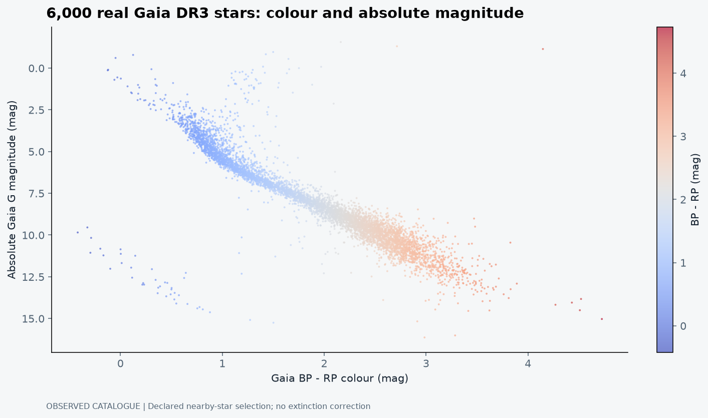
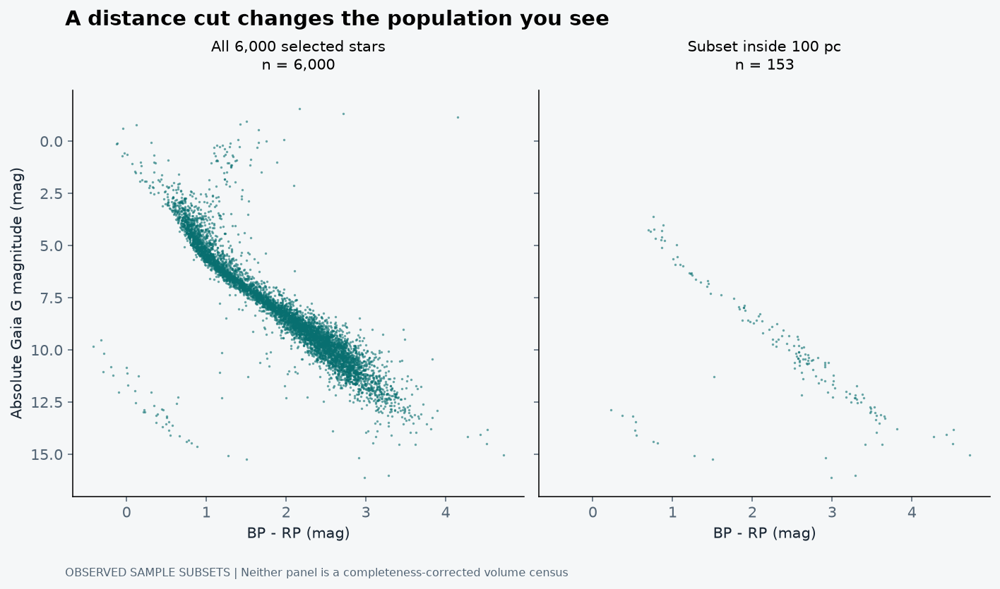

A sky full of dots is not yet an explanation
The first temptation with a stellar catalogue is to make it beautiful. Put the stars into a dark scene, give them colour, let the camera move, and suddenly the browser looks expensive. I enjoy that part. But a star field can be visually convincing while telling us very little about the stars themselves.
The more interesting question is what happens when we stop arranging stars by where they appear in the sky and start arranging them by what we can measure about them. Colour and absolute magnitude turn an apparently untidy collection into recognisable structures. The main sequence appears. Giants occupy another region. White dwarfs become a different kind of clue.
That is the idea behind my Gaia Galactic Explorer and H-R Engine. It uses catalogue rows rather than randomly placed stars. The visualisation should help us ask questions of the data, not quietly substitute for the data (Jana, 2026).
First, fix the brightness problem
A bright point in the sky might be intrinsically luminous, nearby, or both. Apparent magnitude alone cannot separate those possibilities. Distance is the missing piece. For a precise positive parallax measured in milliarcseconds, the simple geometric estimate is d = 1000/ϖ parsecs.
We can then write the absolute Gaia G magnitude as M_G = G + 5 log₁₀(ϖ) - 10, with ϖ in milliarcseconds, before correcting for extinction. Absolute magnitude describes how bright the object would appear at ten parsecs. Smaller magnitudes mean brighter objects. Astronomy does occasionally make a new reader work for a perfectly reasonable idea.
The inversion needs a boundary. A noisy parallax does not turn into a well-behaved distance just because we divide by it. Bailer-Jones (2015) treats distance estimation as inference and explains why uncertainty and prior assumptions matter. My nearby-star query therefore starts with positive parallaxes above 2 mas and parallax signal-to-noise above 20. That makes the simple estimate more useful for this demonstration; it does not remove all astrometric systematics.
What the diagram actually measures
The horizontal axis here is BP-RP, a difference between Gaia photometric bands. It is a colour index, not a direct thermometer. The vertical axis is absolute G magnitude, not bolometric luminosity. Calling this an observational colour-magnitude diagram is more precise than pretending that every point already has a calibrated temperature and total energy output.
Gaia's observational H-R work demonstrates how much stellar structure becomes visible with good astrometry and photometry (Gaia Collaboration, 2018). DR3 supplies a much broader set of products, but a particular plot still uses a particular subset of those measurements (Gaia Collaboration, 2023). Having more columns available does not mean I have used all of them.

Read this plot from the axes inward. The diagonal concentration is the main sequence. Stars spend a substantial part of their lives supported by hydrogen fusion in their cores, but the points do not all have the same mass or age. A main-sequence star does not simply walk from one end of this band to the other as time passes.
The bright, redward region contains evolved stars whose large radii can make them luminous despite cooler surfaces. A hot object can also be faint if its emitting area is small, which is why white dwarfs occupy a different part of a sufficiently deep diagram. These regions are guides to physical interpretation, not classifications that the colour of a browser dot can settle by itself.
A population picture is not one star's biography
This is an easy mistake to make because the diagram looks like a route map. It is not one universal track. Stellar mass, composition, binarity and evolutionary state all affect position. A single-age cluster and a mixed field population answer different questions because the assumptions behind them differ.
Unresolved binaries complicate the picture further. Two stars can contribute light to one catalogue entry. Dust changes colour and apparent brightness. A star in an unusual location might be astrophysically interesting, but it might also deserve a closer look at photometric quality, blending or the distance estimate before receiving an exciting label.
For the figure above, I have deliberately not corrected for extinction using an invented dust estimate. That leaves a known limitation. A modest local sample is useful for learning the diagram; it is not an excuse to describe every displacement as stellar evolution.
The cuts are part of the result
The nearby-distance requirement favours a local volume. The parallax-precision cut favours measurements the instrument can determine well. Requiring available BP and RP photometry excludes other entries. Taking 6,000 rows after those cuts controls the file size, not the selection function of Gaia itself.
This means the number of points in a region cannot immediately become the fraction of all stars in that evolutionary stage. The display has a denominator, and the denominator is not the Galaxy. To make a population claim, I would need to model what the survey and query include and miss, as well as the effects of dust, unresolved systems and measurement uncertainty.
The same caution applies to a 3D view. Converting right ascension, declination and estimated distance into Cartesian coordinates is a useful local projection. It does not reconstruct the entire Milky Way. Changing the camera is not the same operation as correcting the catalogue.
Work through one star before interpreting six thousand
Take a hypothetical entry with G = 12.00 mag, parallax 10.0 mas and parallax uncertainty 0.1 mas. The simple inverse gives 100 pc. Substitution into the distance modulus gives M_G = 7.00 mag. If BP-RP is 1.5 mag, the plotted point is therefore (1.5, 7.0), before any extinction correction. These are teaching inputs, not an additional Gaia observation.
The parallax contribution to the magnitude uncertainty follows by differentiation. With small fractional errors, σ_M,parallax ≈ (5/ln 10)(σ_ϖ/ϖ). A one per cent parallax error contributes about 0.0217 mag. If the G-band photometric error were 0.005 mag and independent of parallax, the quadrature total would be about 0.0223 mag. That calculation leaves out systematic calibration errors and extinction uncertainty; it is not the whole error budget.
σ²M ≈ σ²G + [(5/ln 10) σϖ/ϖ]² + σ²A
This uncertainty expression assumes small errors and independent terms. Correlations add covariance terms. A_G is the extinction in Gaia G, not a colour excess.
Now suppose A_G were 0.30 mag. The extinction-corrected absolute magnitude would be 6.70, not 7.30: dust made the source appear dimmer, so removing its effect makes the inferred intrinsic source brighter. Correcting BP-RP also requires an appropriate colour excess. Subtracting A_G from both axes would not be a dust correction; it would be an arithmetic coincidence.
Why one red star can be bright and another faint
The physical H-R diagram relates luminosity and effective temperature. The Stefan-Boltzmann relation gives L = 4πR²σ_SB T_eff⁴. Temperature matters strongly, but emitting area matters as well. Two objects with similar effective temperatures can have very different luminosities if their radii differ substantially.
A red giant is not bright because red light is intrinsically a brighter colour. Its large emitting area is important. A white dwarf can be hot and yet comparatively faint because its radius is small. The observational colour-magnitude diagram gives clues to these differences, but converting G-band magnitude into bolometric luminosity needs a bolometric correction; converting BP-RP into temperature needs a calibration that depends on stellar properties and extinction.
That distinction prevents an attractive secondary axis from doing too much work. A single luminosity conversion attached to every G magnitude is not exact for stars with different spectra. The catalogue plot is already useful without pretending those extra inferences have been completed.
Two stars can occupy one catalogue point
If two identical unresolved stars contribute equal flux in both bands, the total flux doubles while their combined colour stays the same. The magnitude change is -2.5 log₁₀(2), approximately -0.753 mag. The system appears above the corresponding single-star sequence because the magnitude axis is inverted.
Real binary systems need not have equal component temperatures or fluxes. Their combined colour can also change, and some systems are resolved or have problematic astrometry. The 0.753-mag offset is therefore a useful limiting case, not a rule that labels every point above the sequence as a binary.

Compare the distributions rather than simply counting the brightest points. The smaller-distance selection changes which absolute magnitudes and populations are well represented. It can make the local sequence look cleaner without adding a new physical law. The absence of a rare luminous population in a small sampled volume would not demonstrate that such stars do not exist.
The main sequence is not an age slider
For a field population, stars of different masses, ages and chemical compositions overlap in one diagram. A star's initial mass strongly influences its luminosity and evolutionary timescale. A low-mass star does not normally age by sliding up the entire main sequence until it becomes a massive blue star.
An open cluster offers a different experiment because its stars can approximately share a distance, age and initial composition. The main-sequence turn-off then becomes informative about the most massive stars still in that evolutionary stage. Even there, binary systems, membership errors, reddening and model assumptions matter. One cannot read a precise age from a field-star location without supplying additional information.
The Gaia observational H-R study is useful here because it distinguishes field and cluster diagrams and uses filtering and extinction treatment explicitly (Gaia Collaboration, 2018). Its detailed structures are not evidence that every small browser sample will display all the same features. My plot contains fewer stars and applies a much simpler selection.
Clean astrometry is not the same as complete photometry
The query's parallax signal-to-noise cut constrains one aspect of the distance estimate. It does not by itself guarantee uncontaminated BP/RP fluxes, a well-modelled single-star astrometric solution or negligible dust. A professional selection would examine additional quality indicators appropriate to the scientific question, rather than attach the phrase “high quality” to one threshold and stop.
Negative parallaxes also deserve a careful explanation. They can occur in noisy astrometric estimates. They do not imply negative distances or necessarily fraudulent catalogue entries. Discarding them may be appropriate for this simple nearby-star demonstration, but a population-inference problem should model the measurement process rather than universally deleting inconvenient estimates (Bailer-Jones, 2015).
For the displayed sample, inverse parallax is intentionally a bounded approximation: ϖ > 2 mas and ϖ/σ_ϖ > 20. A source at the latter boundary has a five per cent formal fractional error, corresponding to about 0.109 mag in the small-error propagation above. The error bars are not literally zero merely because they would be awkward to draw on six thousand points.
What I would measure with this diagram, and what I would not
The diagram can support questions about where particular measured objects lie, how a declared filter changes the visible distribution, and whether an unusual entry deserves closer inspection. It can also test whether the coordinate and magnitude calculations behave sensibly under known transformations.
It cannot alone provide the Galaxy's initial mass function, a precise star-formation history or the fraction of all stars that are white dwarfs. Those require a survey selection model, astrophysical models and a treatment of uncertainties and contamination. A density of rendered dots is partly a density of successful measurements.
This is also why I would preserve individual source identifiers. A suspicious point should lead back to an archive entry, not disappear into the aesthetics of a colour palette. The route from a visual anomaly to a testable scientific question is what makes the explorer useful beyond a screenshot.
What I want the interactive version to teach
The useful interactions are simple: inspect a point, read its measurements, change a declared cut, and see which stars leave the sample. The reader should be able to distinguish a scientific filter from a cosmetic colour setting. A failed archive request should remain a failed request, not trigger a secret population of synthetic stars.
The most satisfying moment is not when the dots move in three dimensions. It is when a reader can explain why two red stars appear at very different absolute magnitudes. At that point, the plot has stopped being a background image and started doing some astronomy.
I still want the visualisation to be attractive. I just want the axes to survive the attraction.
References
Bailer-Jones, C.A.L. (2015) ‘Estimating distances from parallaxes’, Publications of the Astronomical Society of the Pacific, 127, pp. 994-1009. Available at: https://doi.org/10.1086/683116.
Gaia Collaboration (2018) ‘Gaia Data Release 2: Observational Hertzsprung-Russell diagrams’, Astronomy & Astrophysics, 616, A10. Available at: https://doi.org/10.1051/0004-6361/201832843.
Gaia Collaboration (2023) ‘Gaia Data Release 3: Summary of the content and survey properties’, Astronomy & Astrophysics, 674, A1. Available at: https://doi.org/10.1051/0004-6361/202243940.
Jana, B. (2026) Gaia Galactic Explorer & H-R Engine [Software]. Available at: interactive-hr-diagram-lab (Accessed: 21 October 2026).